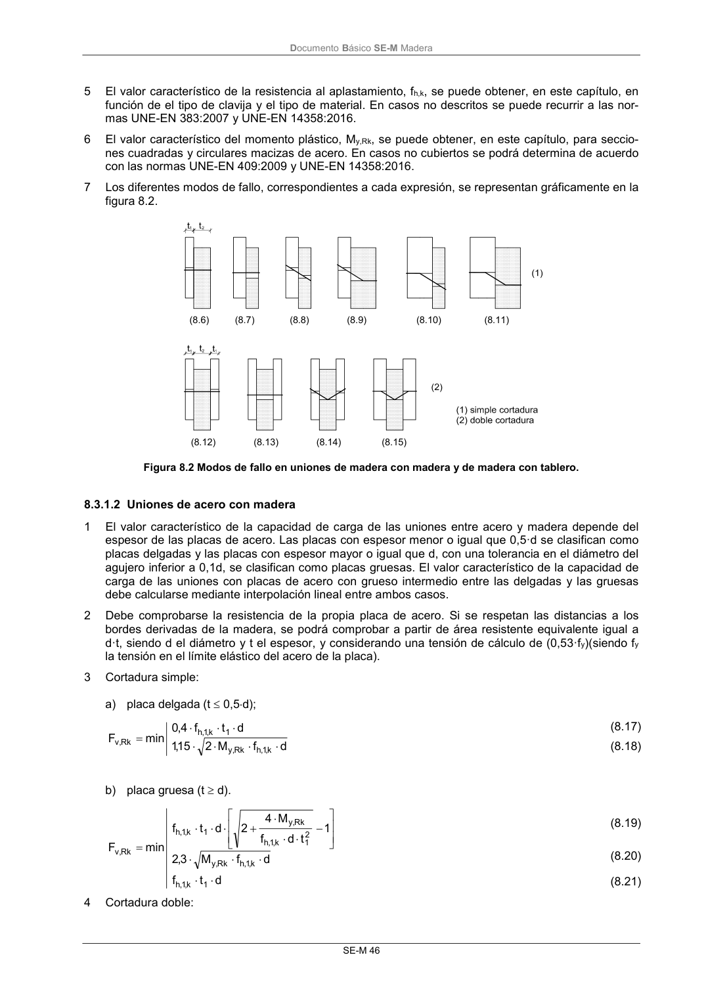

DB-SE-M · 8.3.1.1 Uniones madera con madera y de tablero con madera · versión 2019-12-20 · capa oficial
Formatos: JSON compacto · Markdown · PDF fuente
Ámbito del documento · texto del ámbito · documento y tablas
ID técnico a0106 · PDF pág. 51-52 · jerarquía no validada por persona · contrastado con el literal de la página 51 (candidato tipográfico); no validado por persona · padre: a0105
8.3.1.1 Uniones madera con madera y de tablero con madera 1 Cortadura simple: d f M 2 1 2 15 ,1 t d f M 2 1 5,4 1 2 2 1 d t f 05 ,1 t d f M 2 5,4 1 2 2 d t f 05 ,1 t t 1 t t t t t t 1 2 1 d t f d t f d t f min F k,1,h Rk ,y 2 2 k,1, h Rk ,y 2 2 k,1,h 2 1 k,1,h Rk ,y 1 k,1,h 1 2 2 1 2 3 2 1 2 1 2 2 1 k,1, h 2 k,2 ,h 1 k,1,h Rk ,v (8.6) (8.7) (8.8) (8.9) (8.10) (8.11) 2 Cortadura doble: d f M 2 1 2 15 ,1 t d f M 2 4 1 2 2 d t f 05 ,1 d t f 5,0 d t f min F k,1, h Rk ,y 2 1 k,1,h Rk ,y 1 k,1,h 2 k, 2 , h 1 k,1,h Rk ,v (812) (8.13) (8.14) (8.15) siendo: k,1,h k,2 ,h f f (8.16) donde: d diámetro del elemento de fijación; ti espesor del tablero o de la pieza o profundidad de penetración, referida a la pieza 1 ó 2, véanse apartados 8.3.2 a 8.3.6; fh,i,k resistencia característica al aplastamiento en la pieza i; véanse los apartados 8.3.1.1.2 y 8.3.2.1.3; My,Rk momento plástico característico, véanse apartados 8.3.2 a 8.3.6; Fv,Rk capacidad de carga por plano de cortante y por elemento de fijación; Las capacidades de carga más altas se obtienen en los mecanismos de rotura donde la rótula plástica de la clavija y la tensión de aplastamiento de la madera se alcanzan de forma simultánea. Para ello se recomienda que la clavija penetre entre 10 y 12 diámetros en la madera en cada una de las piezas a unir. 3 En cortadura doble, el subíndice 1 corresponde a las piezas laterales y el subíndice 2 a la pieza cen- tral. 4 En uniones a cortadura simple, el valor característico de la capacidad de carga al arranque, Fax,Rk, se toma como el más bajo de los correspondientes a las capacidades de carga de las dos piezas. DocumentoBásico SE-M Madera SE-M 46 5 El valor característico de la resistencia al aplastamiento, fh,k, se puede obtener, en este capítulo, en función de el tipo de clavija y el tipo de material. En casos no descritos se puede recurrir a las nor- mas UNE-EN 383:2007 y UNE-EN 14358:2016. 6 El valor característico del momento plástico, My,Rk, se puede obtener, en este capítulo, para seccio- nes cuadradas y circulares macizas de acero. En casos no cubiertos se podrá determina de acuerdo con las normas UNE-EN 409:2009 y UNE-EN 14358:2016. 7 Los diferentes modos de fallo, correspondientes a cada expresión, se representan gráficamente en la figura 8.2. Figura 8.2 Modos de fallo en uniones de madera con madera y de madera con tablero.

PDF fuente redistribuible: copia fiel enlazada en esta página (SHA256 verificado).